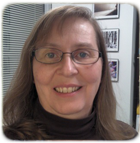
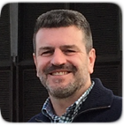
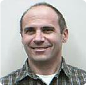
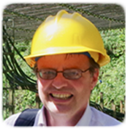
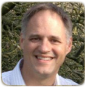
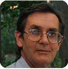
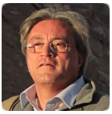
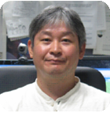

Program Organizing Committee (POC)
|  | Alice Allen (ASCL) Alice is the editor of the Astrophysics Source Code Library. She joined the ASCL in 2010 and is a member of the American and European Astronomical Societies. She participates in efforts to improve research transparency and recognition for software contributions to research such as, CodeMeta, and the Force11 Software Citation Implementation Working Group, has over 30 years of experience in information technology and training, and recently retired from the Federal Reserve Board (US central bank). |
|  | Christophe Arviset (ESA-ESAC) Christophe Arviset is the Head of the Data and Engineering Division at ESA’s European Space Astronomy Centre (ESAC) in Spain, close to Madrid. This includes responsibility of ESA’s space science missions in post-operations phase (ie Herschel, Planck and Rosetta), all technical IT services and other cross missions engineering activities to support Science Operations at ESAC. Furthermore, he’s heading the ESAC Science Data Centre, hosting science data archives of more than 20 ESA space science missions. He has been playing an active part of international data alliances (International Virtual Observatory Alliance and International Planetary Data Alliance) since their creation, and had been chairing the IVOA over 2014-2016. Initially Computer Science engineer by training, Christophe has developed more than 20 years of experience in science operations with special focus on science data management, data archives and long term data preservation. |
 |
Pascal Ballester (ESO) Pascal Ballester is Head of the Science Operations Software Department at the European Southern Observatory. He joined ESO in 1990, to integrate the Image Processing Group for the development of instrument-related software in MIDAS. He coordinated several projects for the Very Large Telescope, including data reduction software for the high-resolution spectrograph UVES of the Very Large Telescope, the ESO Exposure Time Calculators, and Data Flow System for the VLT Interferometer. As of 2007, he led the ESO Pipeline Systems Department, responsible for the development of data reduction software and observation preparation models for the VLT and ALMA facilities. Since 2014, he is Head of the Science Operations Software Department, providing software development and engineering support to the ESO Programmes, mainly Paranal Instrumentation, VLT and ALMA science operations, and ELT programme. |
 |
Sébastien Derrière (CDS/France) Sébastien is an astronomer at CDS (Observatoire astronomique de Strasbourg). He has been working on Virtual observatory projects for many years, with a special interest in standardization of metadata and semantics (Unified Content Descriptors, Units, vocabularies and ontologies). He is also working on catalogue cross-matching, and the development of astronomical portals (for the CDS and in the ASTRODEEP project). Sébastien is also in charge of communication at the Strasbourg observatory, and is spending a significant fraction of his time on user support and education and public outreach activities. |
 |
Mike Fitzpatrick - POC Exec (NOAO) Mike is a Principal Software Systems Engineer at NOAO, beginning his career with the IRAF Project in 1988. Since then, he has been involved in a wide range of observatory projects involving data analysis, acquisition and transport, Virtual Observatory application development and ongoing support for the IRAF system. He is currently the Lead Developer and System Architect for the NOAO Data Lab project. |
 |
Stephen Gwyn (CADC) Stephen works as a data specialist at the Canadian Astronomy Data Center. He has developed MegaPipe a pipeline to handle data from MegaCam on CFHT and WIRwolf for data from WIRcam, also on CFHT. He also designed the Solar System Object Image Search service at the CADC. |
Jorge Ibsen Jorge Ibsen joined the European Southern Observatory (ESO) in 1997 and since March 2010, he serves as the Head of the ALMA Department of Computing at the Joint ALMA Observatory. This department presently includes information technology, software, and the archive operations groups. Starting 2013, he also leads, in collaboration with other three regional heads, the Integrated Computing Team, a collaborative worldwide team which will include all ALMA's software engineers, both at the ALMA Executives and the JAO, who are charged with supporting and maintaining the ALMA software infrastructure and services in operations. |
|
|  | Tony Krueger (STScI) Tony Krueger is the Chief Engineer for Planning and Scheduling at the Space Telescope Science Institute. He is responsible for the technical oversight of the James Webb Space Telescope's and the Hubble Space Telescope's planning and scheduling software systems. |
 |
Kathleen Labrie (Gemini) Kathleen is an Observatory Scientist at Gemini Observatory. She has been involved with the development of the Gemini data reduction software since she joined Gemini in 2003. Her involvement has been at all level, from developer, to manager, and also as a user through her personal astronomical research endeavours. |
|  | Mark Lacy (NRAO) Mark Lacy is a scientist at the NRAO in Charlottesville, Virginia. His interests are in data management and archiving of astronomical data. He currently leads the data reduction effort for ALMA data in North America, and is involved in the development of the ALMA and NRAO archives, along with being the Project Scientist for the VLA Sky Survey.
|
|  | Jim Lewis (IoA) Jim Lewis is a scientist at the Cambridge Astronomy Survey Unit at the University of Cambridge. He has been involved in developing data reduction and pipeline software for about 25 years for both imaging and spectroscopic instruments, principally in the optical and infrared wavebands. He is currently writing the science pipelines for WEAVE and for 4MOST, both of which are optical waveband multi-object spectrographs. |
 |
Nuria Lorente - POC Chair (AAO) Nuria Lorente is currently working with the Australian Astronomical Observatory. Her 20-year career has taken her around the world, from the Australia Telescope National Facility (now CSIRO Astronomy and Space Science), to Jodrell Bank Observatory, the Astronomy Technology Centre in the UK and the National Radio Astronomy Observatory in the USA. She has a wide range of experience in astronomical software for both optical and radio observatories, and and has particular interests in data simulation, source-finding algorithms, and the development of computing and software engineering within the astronomical community. Nuria feels fortunate to have worked with some very talented people and on a number of interesting projects and instruments, including ALMA,JWST/MIRI, VISTA, MERLIN, ATCA and currently SAMI and TAIPAN. |
 |
Jessica Mink (SAO) Jessica works at the Harvard-Smithsonian Center for Astrophysics at SAO's Telescope Data Center, writing and using data reduction, analysis, and archiving software for spectra of stars and galaxies taken with several spectrographs on our ground-based telescopes. She has written the IRAF RVSAO radial velocity analysis package and the widely-used WCSTools package which connects pixel and sky positions of digital images of the sky, uses source catalogs, and manipulates FITS images. |
 |
Fabio Pasian (INAF) Fabio is a senior astronomer at INAF-OATS where he leads a group composed of over 30 scientists and engineers involved, mostly in the framework of international projects, in the development of computer applications for astrophysics (control of scientific instrumentation, distributed computing, data processing and archiving, and the astronomical Virtual Observatory). Currently he is Co-I of Planck, and a member of the Project Office of the Science Ground Segment for the Euclid mission. |
|  | Keith Shortridge (AAO) Keith works at the Australian Astronomical Observatory, and has many years of experience developing astronomical software, mainly for instrument control and data reduction. He is particularly interested in the use of hardware simulation in instrument control software projects, and in ways of displaying astronomical data. |
|  | Mauricio Solar Mauricio is an Electronic Engineer and a full professor in the Informatics Department at Technical University Federico Santa María (UTFSM), Chile, where he leads a research group in Astro-informatics since 2009. He coordinates several projects in the development of computer applications for astronomy. He leads the development of the Chilean Virtual Observatory (ChiVO), and he is the Chilean representative of ChiVO in IVOA. |
|  | Tadafumi Takata (NAOJ) Tadafumi is an astronomer based on optical/near infrared observation and has worked for 10 years on the data archive system of the Japanese Subaru telescope. He is currently an associate professor at the Astronomy Data Center (ADC) of the National Astronomical Observatory of Japan in charge of data management. |
 |
Peter Teuben (UMD) Peter is a research scientist at the University of Maryland. For over 30 years he has been working on radio interferometry and image analysis software and pipelines with WSRT, BIMA, CARMA and ALMA, to name a new(GIPSY, MIRIAD, CASA). He is also interested in simulation software, and is the maintainer of the NEMO Stellar Dynamics toolbox. More recently is has become involved in the ASCL, and now that incoming students do not know any Unix, the teaching of scientific computing using Unix. |
 |
Xiuqin Wu (IPAC) Xiuqin Wu is currently working at IPAC, Caltech. She is the task lead for the Science User Interface and Tools (SUIT) team for Large Synoptic Survey Telescope (LSST). The team is responsible to deliver the Portal Aspect of LSST Science Platform. Prior to joining LSST, Xiuqin worked on the user interface for NED, led the Uplink team for Spitzer Science Center, and was the task lead for user interface group in the NASA/IPAC Infrared Science Archive (IRSA) at IPAC Caltech. |
POC Internal Pages
The ADASS Program Organizing Committee internal pages can be found here. (log-in required)